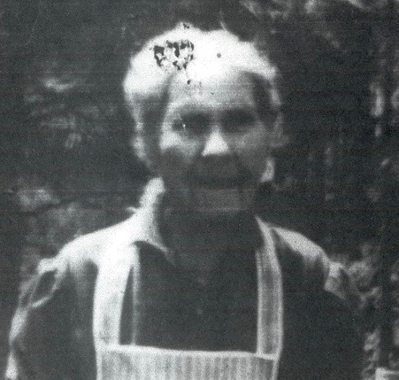

Laura Williams
1855–1944

Life Events
Born: April 29, 1855 — Homerville, Clinch, Georgia, United States
Died: April 29, 1944 — Atkinson County, Georgia, United States
Family
Father: Hezekiah Ponder Williams
Mother: Charlotte Herrin
Spouse: Henry Palmer
Children
Military Service
No military service information has been added.
Biography
Laura Williams was born on April 29, 1855, in Homerville, Clinch County, Georgia.
She married Henry Palmer. She died on her 89th birthday on April 29, 1944, in Atkinson County, Georgia.
Photos
Family photographs will be added here.
Sources
No sources have been added yet.